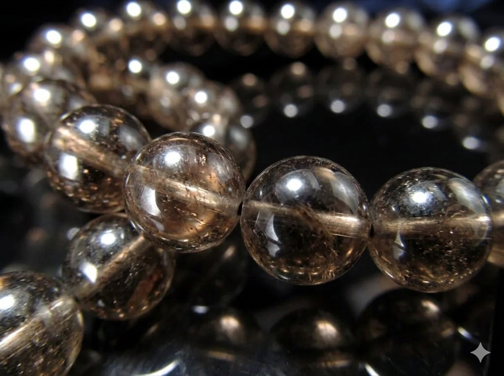

まめ様
詳細のご希望、ありがとうございます。
まめ様のために選んだ石について、
詳しくお伝えしますね。
まめ様の命の流れを視させていただき、
今のまめ様に
最も必要な石を3つ選びました。
まめ様は、深く広い水のように、
人や場の流れを肌で感じ取れる方です。
海のように全部を受け止める器を持ち、
その優しさで、
ご家族の流れを整えてこられました。
でも──
「全部やってあげたい自分」と
「ふと一歩引きたくなる自分」がぶつかり、
息子さんに手を伸ばしかけて途中で止まる、
そういう感覚が
繰り返されやすい流れがあります。
2026年7月から、
ご家族三人の星の運びが同時に動き出す
珍しい流れがすでに始まっています。
その流れを最大限に活かすために、
まめ様のエネルギーと
住吉大神（すみよしのおおかみ）が
深く共鳴する3つの石を選びました。

澄んだ流れる水の力を宿す石です。
まめ様の「深い水の優しさ」と
最も深く共鳴します。
海の三柱の神様の気を最も受けやすく、
まめ様の中の深い水を、
よどみのない
澄んだ流れへと整えてくれます。
まめ様の「全部抱えなくては」
という感覚を、
この石がそっと緩めてくれます。

住吉大神と最も共鳴が強い石です。
「ここまで」と境目を引く胆力を持ち、
進む方向を間違えないように
照らし続ける力があります。
まめ様の命の流れには、
「次のフェーズで人との関わり方を作り直す」
10年の節目が刻まれています。
タイガーアイは、その守護を日常の中で
ずっとそばに置いておける石です。
息子さんに先回りしたくなる時、
握るだけで、
胆力が静かに戻ってきます。

不安を静かに地に降ろしてくれる石です。
まめ様が「大丈夫かな」と
眠れない夜や気になる朝を迎えるとき、
この石が、
そのループを静かにほどいてくれます。
心配の力を止めるのではなく、
それを「信じて見守る方向」へと
整えてくれる石です。
アクアマリン・タイガーアイ・スモーキークォーツ。
この3つをまめ様専用に組み合わせて、
一つひとつ手作りで仕上げます。
住吉大神への祈祷と
エネルギーチャージを込めて、
まめ様のもとへお届けします。
身につけていくうちに、
「全部抱えなくていい」という感覚が
少しずつ戻ってきます。
息子さんのことが
気になって揺れそうなとき、
石が静かにそのループをほどいてくれる。
日常の中で、守護がそばにある。
2027年2月に向けて
住吉大神の力がまめ様へ特に強く流れ込み、
春の新しい木が立ち上がるその時期に、
エネルギーが整った状態で
臨めるようになります。
パワーストーンのエネルギーが
しっかりと馴染むまでには、
通常2〜3週間ほどかかります。
今から始めることで、
ちょうど2026年7月の最初の一歩に
エネルギーが整った状態になります。
- ご注文から7〜10日以内に発送
- 追跡番号付きで安心
- 専用の浄化・エネルギーチャージ済みでお届けします
今回ご購入いただいた方には：
- パワーストーンの取扱い・浄化方法のご案内
- ご購入から3ヶ月間、気になることがあればいつでもご相談いただけます
ご希望の方は、
「ブレスレット希望」と
メッセージをお送りください。
ご不明な点があれば、
お気軽にお尋ねくださいね。
まめ様の中の「引きたい自分」は、
新しいあなたの人生の最初の兆しです。
どうか、
ご自分の人生を歩み始めてください。